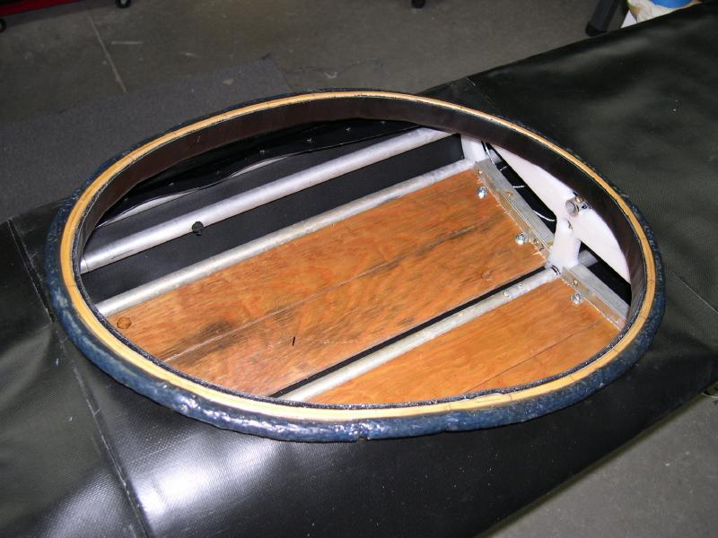

| Wood / Freestanding Coaming (1 of 7) | Menu Previous Page Next Page |
|
 Both the wood and fiberglass coamings can be attached with Velcro on the inside edge of the coaming. The inside Velcro connection is more watertight than the foam seal used with the HDPE coaming / baseplate. This also allows use of the coaming without a base plate, though a temporary base plate is used for construction only. Due to it's narrow profile, the wood coaming is free standing and uses no machine screw connections as are used with the HDPE and fiberglass coamings. With it's wider profile, the fiberglass coaming can be connected to cross sections 4 and 5 with stainless steel machine screws. The use of machine screw attachments allow more rigidity along the deckridge. Note - The freestanding wood coaming was designed by Mark Molina. |
|